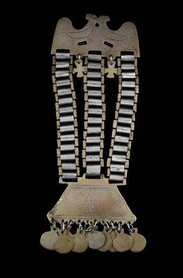
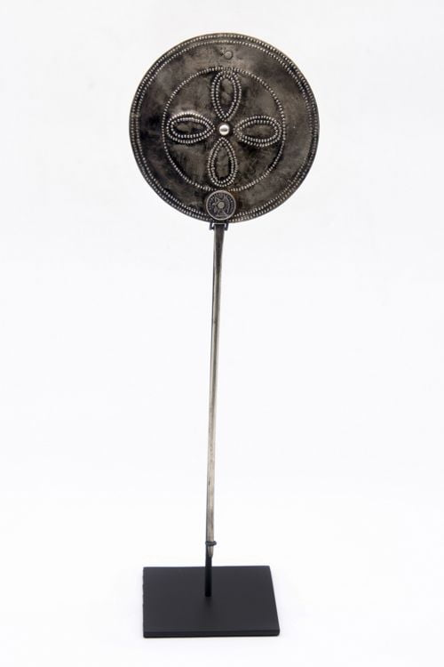

Joyeria Ancestral patagonica
Biblioteca Virtual
Inicio
Catálogo
Sobre el proyecto
Contacto
Catálogo
Limpiar filtros
Buscar por nombre
Tipo de pieza
Material
Procedencia
Aplicar filtros


No se encontraron piezas con esos filtros.